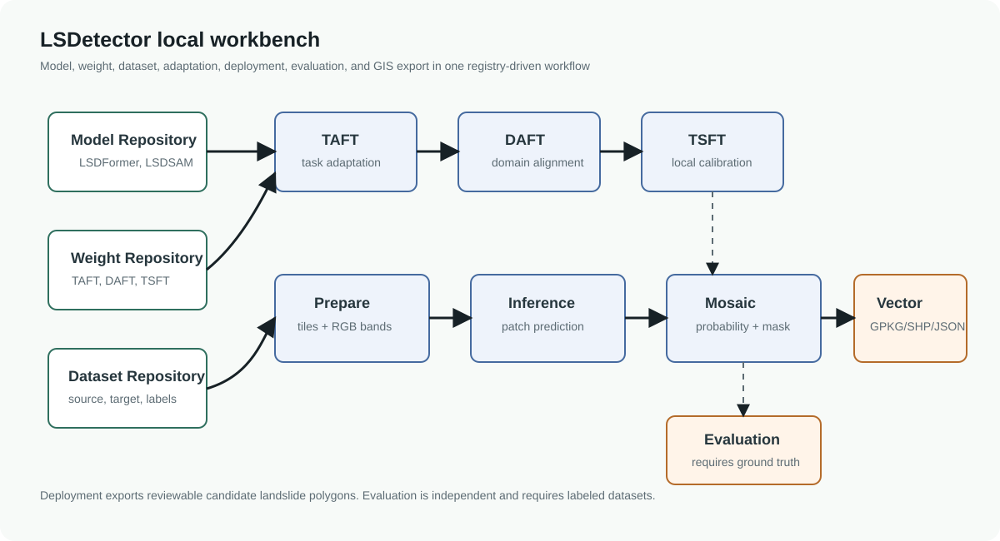
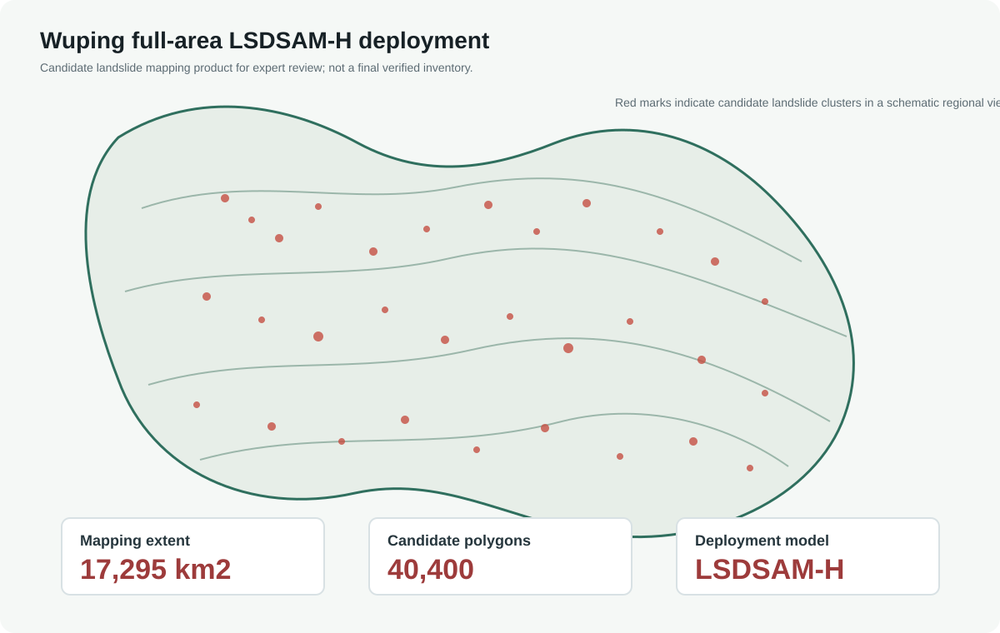

LSDFormer
Compact CNN-Transformer model for efficient cross-region landslide detection and fast deployment.
LSDetector is the academic non-commercial implementation and deployment workbench for CNN-Transformer and foundation-model landslide detection, prepared for the ISGDR software link.

Compact CNN-Transformer model for efficient cross-region landslide detection and fast deployment.
SAM-based landslide detector with task-specific and CNN branches for few-shot practical mapping.
Three-stage transfer learning from landslide prior knowledge to target-area adaptation and local calibration.
| Model | Input | Total params | Trainable params | FLOPs | Use case |
|---|---|---|---|---|---|
| LSDFormer | 256 x 256 | 37.7M | 7.9M | 19.6G | Lightweight deployment |
| LSDSAM-B | 512 x 512 | 110.1M | 13.5M | 261.6G | Balanced foundation model |
| LSDSAM-L | 512 x 512 | 339.5M | 17.4M | 840.3G | High-capacity deployment |
| LSDSAM-H | 512 x 512 | 680.9M | 21.6M | 1704.4G | Highest-capacity Wuping case model |
In the ISGDR demonstration, LSDSAM-H supported two AI-assisted refinement rounds and full-area inference over PlanetScope imagery covering 17,295 km2, producing 40,400 candidate landslide polygons for expert review.
This page intentionally does not display the ISGDR precision-evaluation tables; it highlights the software workflow and regional mapping product.
